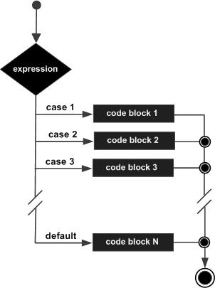

C++ switch statement
In C++, the switch statement is used to execute different code blocks based on different conditions. It is often used to replace a series of if-else statements, making the code clearer and easier to read.
aswitchThe statement allows testing a variable for equality against multiple values. Each value is called a case, and the variable being tested is tested against eachswitch casePerform a check.
Syntax
In C++switchThe syntax of the statement:
switchThe statement must follow the rules below:
- switchin the statementexpressionmust be an integer or enumeration type, or a class type that has a single conversion function converting it to an integer or enumeration type.
- A switch can contain any number of case statements. Each case is followed by a value to compare and a colon.
- of the caseconstant-expressionmust have the same data type as the variable in the switch, and must be a constant or a literal.
- When the tested variable equals the constant in the case, the statements following the case will be executed until abreakuntil the statement.
- When encounteringbreakstatement is encountered, the switch terminates, and control flow jumps to the next line after the switch statement.
- Not every case needs to includebreak. If the case statement does not containbreak, the control flow willResumesubsequent cases, until a break is encountered.
- aswitchThe statement can have an optionaldefaultcase, appearing at the end of the switch. The default case can be used to execute a task when none of the above cases are true. In the default casebreakThe statement is not required.
Flowchart

Example
Example
int main() {
int day = 4;
switch (day) {
case 1:
std::cout << "Monday" << std::endl;
break;
case 2:
std::cout << "Tuesday" << std::endl;
break;
case 3:
std::cout << "Wednesday" << std::endl;
break;
case 4:
std::cout << "Thursday" << std::endl;
break;
case 5:
std::cout << "Friday" << std::endl;
break;
case 6:
std::cout << "Saturday" << std::endl;
break;
case 7:
std::cout << "Sunday" << std::endl;
break;
default:
std::cout << "Invalid day" << std::endl;
}
return 0;
}
When the above code is compiled and executed, it produces the following results:
Thursday
The char type in switch statements:
Example 2
When the above code is compiled and executed, it produces the following results:
您通过了 您的成绩是 D
Notes:
breakStatement:eachcaseat the end of the statementbreakThe statement is necessary to break out ofswitchstatement. If missingbreak, the program will continue to execute the nextcase, this is called "fall-through".defaultStatement:defaultThe statement is optional, but usually in allcasewhen none of them match, it is used to handle all unlisted cases.- Expression type:
switchThe expression is usually an integer or enumeration type; floating-point and string types are not feasible.
Sometimes we may intentionally use fall-through. In the following code, if number is 2 or 3, the same code block will be executed.
Example
int main() {
int number = 2;
switch (number) {
case 1:
std::cout << "Number is 1" << std::endl;
break;
case 2:
case 3:
std::cout << "Number is 2 or 3" << std::endl;
break;
default:
std::cout << "Number is not 1, 2, or 3" << std::endl;
}
return 0;
}
When the above code is compiled and executed, it produces the following results:
Number is 2 or 3other extensions
Jailman
xma***man.com
Example of simply displaying colored strings under C++ Linux, using a switch statement:
#include <iostream> #include <string> using namespace std; void printcolor(string color, string str) { int clr; string head; string tail; string display; if(color=="red") clr=1; if(color=="green") clr=2; switch(clr){ case 1:{ head="\033[31m"; tail="\033[0m"; display=head+str+tail; break; } case 2:{ head="\033[32m"; tail="\033[0m"; display=head+str+tail; break; } default:{ display=str; break; } } cout << display << endl; } int main () { printcolor("red", "helloworld!"); printcolor("green", "helloworld!"); return 0; }Jailman
xma***man.com